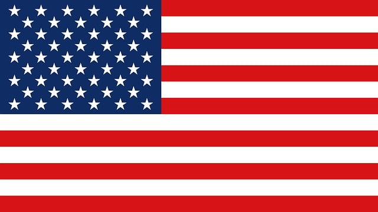

Velozes e Furiosos 6
No Brasil Velozes e Furiosos 6
Em Portugal Velocidade Furiosa 6
 Estado Unidos Japão
2013 • cor • 130 min
Gênero ação, aventura, policial
Direção Justin Lin
ProduçãoNeal H. Moritz Vin Diesel Clayton Townsend
Produção executivaJustin Lin Amanda Lewis Samantha Vincent Chris Morgan
Após seu assalto bem-sucedido no Brasil (conforme retratado no filme anterior), Dominic Toretto
e
sua equipe criminosa profissional fugiram pelo mundo e vivem pacificamente: Dom mora com Elena
Neves; sua irmã Mia mora com Brian O'Conner e seu filho, Jack; Gisele Yashar e Han Lue estão
juntos;
e Roman Pearce e Tej Parker desfrutam suas vidas no luxo. Enquanto isso, os agentes do DSS Luke
Hobbs e Riley Hicks investigam a destruição de um comboio militar russo por uma gangue de
mercenários liderados pelo ex-major britânico do Serviço Aéreo Especial Owen Shaw. Hobbs
localiza
Dom e o convence a ajudar a capturar Owen, mostrando-lhe uma foto de sua esposa supostamente
assassinada, Letty Ortiz, que está trabalhando com Owen e sua equipe. Dom e sua equipe aceitam a
missão em troca de um perdão judicial de seus crimes anteriores.
Em Londres, o esconderijo de Owen é encontrado, mas revela-se uma distração, enquanto a equipe
de
Owen realiza um assalto em um prédio da Interpol. Owen foge em um carro personalizado, detonando
seu
esconderijo e incapacitando a maior parte da polícia, deixando Dom, Brian, Tej, Roman, Han,
Gisele,
Hobbs e Riley para persegui-lo. Letty chega para ajudar Owen, atirando em Dom sem hesitar antes
de
escapar. De volta à sede, Hobbs diz à equipe de Dom que Owen está roubando componentes para
criar um
dispositivo "Nightshade" que pode desligar toda a energia do planeta, com a intenção de vendê-lo
ao
maior lance. Enquanto isso, a investigação de Owen sobre a equipe de Dom revela o antigo
relacionamento de Letty com Dom, mas ela afirma estar sofrendo de amnésia e que não se lembra de
nada. A equipe de Dom descobre que Owen está ligado a Arturo Braga, um traficante que Dom e
Brian
prenderam (conforme mostrado em Fast & Furious). Enquanto Tej compra vários carros em um leilão
para
a missão, Brian retorna a Los Angeles como prisioneiro para questionar Braga, que revela que
Owen o
ajudou a construir seu cartel de drogas e que Letty sobreviveu à explosão que supostamente a
teria
matado anos antes; Owen a acolheu depois de perceber sua amnésia.
Televisão
O canal americano FX comprou os direitos de exibição do filme para transmiti-lo em sua grade no ano corrente de 2015.[46] No Brasil, a Rede Record adquiriu os direitos para a TV aberta e exibiu o filme de forma inédita em 20 de janeiro de 2016 dentro da sessão Super Tela.[47]
Recepção
Comercial
O filme arrecadou US$ 239 milhões na América do Norte e US$ 550 milhões em outros lugares, totalizando US$ 789 milhões em todo o mundo.[48] O Deadline Hollywood calculou o lucro líquido do filme em US$ 131,5 milhões, considerando todas as despesas e receitas, tornando-o o sexto lançamento mais lucrativo de 2013.[49] Se tornou a sexta maior bilheteria mundial de 2013[50][51] e o quarto filme da Universal de maior bilheteria mundial na história.[52] No fim de semana de 14 a 16 de junho de 2013, Fast & Furious 6 tornou-se o filme de maior bilheteria da franquia em todo o mundo,[53][54] até ser superado por seu sucessor Furious 7.
Homem-Aranha

Estado Unidos
2002 • cor • 121 min
Gênero aventura, drama, ficção científica
Direção Sam Raimi
Produção Laura Ziskin Ian Bryce
Narração Tobey Maguire
Em uma excursão escolar, Peter Parker visita um laboratório de genética e uma exposição de aranhas de quinze espécies junto com seu amigo Harry Osborn e seu interesse amoroso, Mary Jane Watson. Peter é picado por uma aranha geneticamente modificada. Depois de chegar a casa de seu Tio Ben e sua Tia May, ele acaba passando mal em seu quarto e fica inconsciente. Enquanto isso, o pai de Harry, o cientista Norman Osborn, está tentando preservar um contrato militar de importância crucial para sua empresa, a Oscorp. Ele testa uma fórmula ampliadora de desempenho em si mesmo, porém, acaba ficando insano e mata seu assistente, Mendel Stromm. Na manhã seguinte, Peter percebe que sua visão melhorou e seu corpo se metamorfoseou em um físico mais musculoso. Na escola, ele descobre que pode produzir teias e ganha um sentido de aranha, que o salva de ser esmurrado pelo valentão da escola, Flash Thompson, e termina por mandar o mesmo ao chão com um único soco, impressionando seus colegas. Jogando fora o conselho de seu tio Ben, de que "com grandes poderes vêm grandes responsabilidades", Peter entra em um torneio de luta livre para ganhar dinheiro e comprar um carro, para impressionar Mary Jane, adotando o nome de "Aranha Humana", onde o locutor do ringue se engana ao pronunciar, e lhe chama de "Homem Aranha". Ele vence a luta diante do adversário de nome "Serra Osso", assim acabando sendo enganado. Quando o ladrão Denis Carradine rouba o dinheiro do promotor, Peter deixa o ladrão fugir. Mais tarde, ele descobre que seu tio Ben foi assassinado a tiros, possivelmente pelo mesmo assaltante. Peter confronta o assaltante, apenas para descobrir que era o mesmo ladrão que ele deixou fugir. Depois de Peter desarmá-lo, ele cai de uma janela e morre. Enquanto isso, Norman mata vários cientistas e alguns militares do General Slocum. Ao se formar, Peter começa a lutar contra o crime, criando um traje e apelidando-se de Homem-Aranha. O editor-chefe do Clarim Diário, J. Jonah Jameson, contrata Peter como fotógrafo freelancer, já que Peter foi o único que conseguiu fotos claras do Homem-Aranha. Norman, ao tomar conhecimento de que os membros do conselho da Oscorp pretendem vender a sua empresa, os mata durante o Festival da União Mundial. Jameson nomeia o misterioso assassino de Duende Verde. O vilão oferece ao Homem-Aranha um lugar ao seu lado, mas ele recusa o convite. No jantar de Ação de Graças, Norman deduz a verdadeira identidade do Homem-Aranha, devido o corte no braço feito por Duende Verde. Posteriormente, o Duende Verde ataca e hospitaliza a Tia May. Mary Jane admite que possui uma queda pelo Homem-Aranha, que salvou sua vida em inúmeras ocasiões, e pergunta a Peter se o Homem-Aranha já perguntou sobre ela. Harry, que ama Mary Jane, chega e a vê reunida com Peter. Arrasado, Harry diz ao pai que Mary Jane ama Peter, sem querer revelando a maior fraqueza do Homem-Aranha.
Lançamento teatral
Nos Estados Unidos, o filme quase recebeu a classificação "R" da MPAA devido à intensidade da luta final entre o Homem-Aranha e o Duende Verde, fazendo com que a cena fosse ligeiramente editada. No final do processo, foi classificado como "PG-13" por "violência estilizada e ação".[125] Antes do lançamento do filme nos cinemas britânicos em junho de 2002, o British Board of Film Classification (BBFC) deu ao filme um certificação "aconselhável para maiores de 12"; devido à popularidade do personagem Homem-Aranha com crianças mais novas, o fato gerou controvérsia. O BBFC defendeu sua decisão, argumentando que o filme poderia ter recebido uma classificação "+15". Apesar disso, os Conselhos Distritais de North Norfolk e Breckland, em East Anglia, mudaram para a censura para "PG". No final de agosto, o BBFC abrandou sua censura, levando a Sony a relançar o filme no país.[126]
Mídia doméstica e televisão
Homem-Aranha foi lançado em DVD e VHS em 1.º de novembro de 2002 na América do Norte e Austrália, e em 25 de novembro de 2002, no Reino Unido.[127] Mais de sete milhões de cópias do DVD foram vendidas só no primeiro dia de lançamento.[128] O filme deteria o recorde de maior vendagem de DVD em um único dia até ser superado por Procurando Nemo em 2003.[129] Atualmente, o filme detém o recorde de vendagem em um único dia de um filme em live-action.[130] Em apenas alguns dias, o lançamento do DVD vendeu mais de onze milhões de cópias, superando Monsters, Inc. e estabelecendo recordes para qualquer lançamento no formato.[131] Enquanto o lançamento em VHS vendeu mais de 6,5 milhões de cópias, o lançamento do DVD se tornou um dos títulos do formato mais vendidos de todos os tempos, com mais de 19,5 milhões de cópias vendidas.[132][133]
Rush Hour 2
No Brasil A Hora do Rush 2
No Portugal Hora de Ponta 2
Estado Unidos china
2002 • cor • 121 min
Gênero aventura, drama, ficção científica
Direção Sam Raimi
Produção Laura Ziskin Ian Bryce
Narração Tobey Maguire
Após os acontecimentos do primeiro filme, o detetive de polícia de Los Angeles, James Carter, está de férias em Hong Kong com seu amigo, o inspetor-chefe da força policial de Hong Kong, com quem trabalhou junto para salvar a filha do cônsul chinês, Soo Yung, em Los Angeles. O lazer dos dois é temporariamente suspenso assim que uma bomba explode no Consulado Geral dos Estados Unidos, assassinando dois agentes disfarçados de funcionários da alfândega. O inspetor Lee é designado para o caso, que se torna pessoal quando ele descobre que, de alguma forma, envolve Ricky Tan, ex-parceiro de seu pai. Ricky, que era suspeito de ter um papel na morte do pai de Lee, é agora um líder das Tríades. Isso, no entanto, faz com que Lee e Carter entrem em uma briga com os guarda-costas de Ricky, com Carter se esfurecendo com Lee ao descobrir que ele aceitou um caso nas férias dos dois. O Serviço Secreto dos EUA, liderado pelo agente Sterling, e a polícia de Hong Kong logo entram em uma briga pela jurisdição do caso. De repente, o escritório de Lee, onde Carter estava, é bombardeado, fazendo com que Lee acredite que ele esteja morto e sofra por isso. Carter é revelado por estar vivo, tendo deixado a sala da mesma explodir. Ao se reencontrarem, ele e Lee cruzam o iate de Ricky onde ele está dando um jantar. Ricky repreende sua subalterna, Hu Li, que sai quando Lee e Carter aparecem e confrontam Ricky. Enquanto pede proteção a Lee, Ricky é baleado por Hu Li, que escapa no meio do caos. Irritado, Sterling responsabiliza Lee pela morte de Ricky e ordena que ele saia do caso. Carter é ordenado a voltar para Los Angeles. No entanto, no aeroporto, Carter faz com que Lee volte para Los Angeles com ele. No avião, Carter diz a Lee que em todas as grandes operações criminosas, há sempre um homem rico branco por trás e que o tal homem é Steven Reign, um hoteleiro bilionário de Los Angeles que Carter viu agindo de forma suspeita no barco de Ricky. Eles montam acampamento do lado de fora das Reign Towers, avistando uma agente do Serviço Secreto dos EUA chamada Isabella Molina, que Carter havia conhecido anteriormente em Hong Kong. Depois de alguns mal-entendidos, Molina diz aos dois homens que ela está disfarçada, investigando a lavagem de dinheiro de Reign de US$ 100 milhões em superdólares. Lee e Carter fazem uma visita a Kenny, um ex-presidiário e informante de Carter, que administra um salão de jogos na parte de trás de seu restaurante chinês. Ele diz a eles que um cliente, geralmente falido, recentemente entrou em seu estabelecimento com uma quantidade suspeita de notas de cem dólares. Carter confirma que eles são falsificações de Reign e eles rastreiam o dinheiro de volta para um banco. Os mafiosos estão esperando por eles e deixam os dois policiais inconscientes, com Molina os observando. Depois de chegar a Las Vegas, Lee e Carter acordam dentro de um dos caminhões da turba e escapam. Depois de descobrir onde eles estão, eles percebem que Reign está lavando os US$ 100 milhões através do novo Cassino Dragão Vermelho.
Home media
VHS
| Data de lançamento | País | Classificação/Avaliação | Publicado | Formato | Línguagem | Legendas |
|---|---|---|---|---|---|---|
| 11 de dezembro de 2001 | Estados Unido | PG-13 | New Line Home Entertainment | NTSC | Inglês | Nenhum |
| 11 de março de 2002 | Reino Unido | 12 | Eiv | PAL |
| Data de lançamento | País | Classificação/Avaliação | Publicado | Formato | Região | Línguagem |
|---|---|---|---|---|---|---|
| 26 de setembro de 2005 | Reino Unido | 12 | Eiv | PAL | 2 | Inglês |
| 3 de janeiro de 2006 | Estados Unidos | PG-13 | New Line Home Entertainment | NTSC | 1 | Inglês |